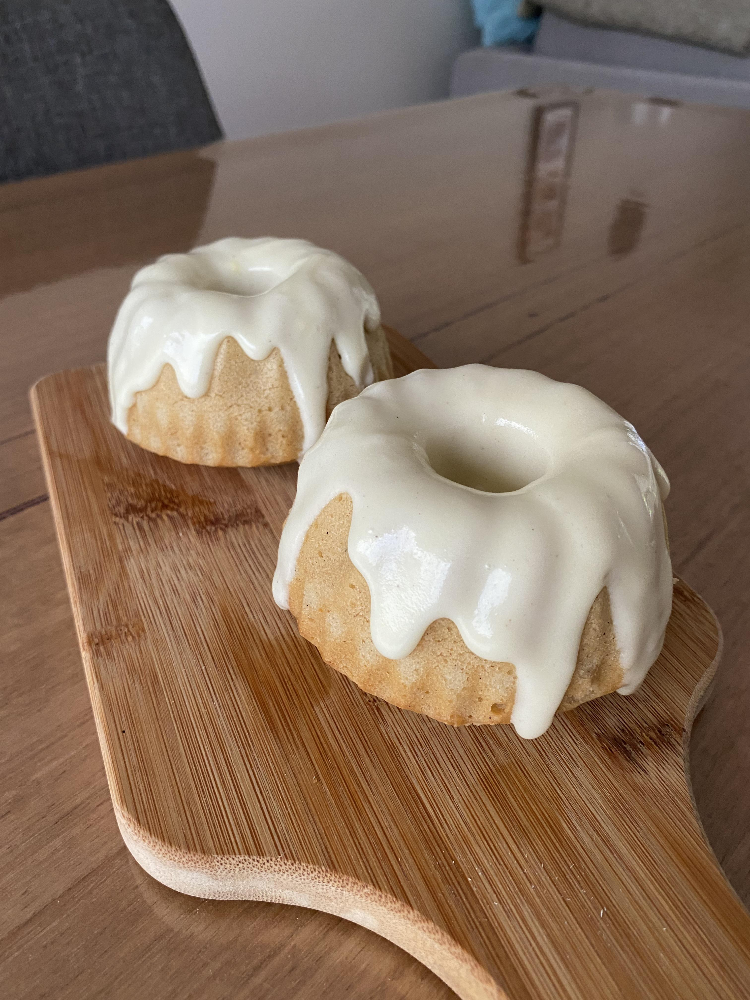

Sweet Roll Recipe

They're the most stolen items in Tamriel - apparently, even dragons can't resist the allure of a sweet roll. But good luck finding one that hasn't been swiped!
Ingredients:
- 2 cups of all-purpose flour (stolen, of course)
- 1/4 cup of sugar (loot from the local pantry)
- 1/2 teaspoon of salt (borrowed from a nearby alchemy shop)
- 1/2 cup of unsalted butter (appropriated from a noble's kitchen)
- 2 tablespoons of stolen vanilla extract
- 1 large stolen egg
- A pinch of cinnamon (swiped from a local market)
- Sweet, sweet oblivion
Recipe instructions:
- Preheat your stolen oven to 350 degrees, and line your stolen baking sheet with parchment paper (or, you know, borrow it).0
- In a stolen bowl, combine the pilfered flour, sugar, and salt. Mix them as silently as a thief in the night.
- Cut the ill-gotten butter into small cubes and sneakily incorporate it into the flour mixture until it resembles breadcrumbs. Be as stealthy as a Khajiit on a moonlit night.
- Whisk the stolen vanilla extract into the egg, then stir this concoction into the flour mixture. Blend it all together until you've created the perfect alibi for your sweet rolls.
- Divide the dough into small, mischievous portions and roll them into balls, like a master thief rolling dice for the ultimate loot. Place them on the prepared baking sheet.
- Sprinkle just a hint of the pinched cinnamon on top, for that extra aromatic distraction.
- Bake your sweet rolls in the preheated oven for about 15-20 minutes, or until they're a lovely shade of golden brown. Keep a lookout for any nosy guards; you don't want them to catch you red-handed.
- Once they're done, let them cool, but be sure to indulge while they're still warm. Serve with a sly grin, and remember, if anyone asks, you didn't steal these delicious sweet rolls - they were a gift from a friendly Khajiit.
Return to top
Return to main page